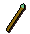
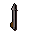
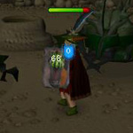

Herblore - Weapon Poison
Introduction
RuneScape members have the ability to use weapon poison on any of the following piercing weapons:
Weapon |
Image |
| Arrows | |
| Daggers | ![[image]](../../img/main/kbase/weapons/melee/dragon_dagger_p.gif) |
| Darts | ![[image]](../../img/main/kbase/weapons/ranged/rune_dart_poisoned.gif) |
| Knives | ![[image]](../../img/main/kbase/weapons/ranged/rune_knife_poisoned.gif) |
| Javelins | ![[image]](../../img/main/kbase/weapons/ranged/rune_javelin.gif) |
| Spears |  |
| Bolts |  |
| Keris | ![[image: keris]](../../img/main/kbase/items/quests/keris.gif "keris") |
You can have any level of Herblore in order to use poison on a weapon, as long as you have a weapon that can be poisoned and a type of weapon poison in your inventory.
There are currently four different types of poison commonly found throughout the world. These are:
Poison |
Symbol |
![[image]](../../img/main/kbase/items/potions/poison/weapon_poison.gif) Weapon poison Weapon poison |
(p) |
![[image]](../../img/main/kbase/items/potions/other_potions/extrastrength_weaponpoison.gif) Weapon poison+ Weapon poison+ |
(p+) |
![[image]](../../img/main/kbase/items/potions/other_potions/poison/karam_paste.gif) Karambwan paste Karambwan pasteCan only be applied to spears |
(kp) |
![[image]](../../img/main/kbase/items/potions/other_potions/superstrength_weapon_poison.gif) Weapon poison++ Weapon poison++ |
(p++) |
The damage that these cause increases as you go down through the list.
To remove the poison from your weapon, you will need to use some karamjan rum on a piece of silk to make a cleaning cloth. You then need to use the cloth on your weapon to clean the poison off.

If you get poisoned, you can use any anti-poison in order to cure yourself - the higher level the anti-poison the longer you will be protected before being poisoned again. If you do not use an anti-poison, the effect of poison will gradually decrease and wear off after a certain period of time. With an anti-poison totem wielded, you can also prevent ANY poison effects (although, it will not remove any existing poison effects).
In addition to seeing the green poison 'splat' every now and then, the life points status globe next to your minimap will turn green. If you have an antipoison potion in your inventory, you can click the globe to automatically drink a dose.
Please be aware, if you are poisoned while on a members' world and you then switch to a free world, you will still suffer the effects of being poisoned. You will not be able to drink a poison antidote, though, as they are members-only items.
In this case, the best thing to do is to eat food until the poison runs out, or return to a members' world where you will be able to get cured.
Click here to view the Herblore FAQs

More articles in
Herblore
|
|
|
Further Help
Need more help? Come chat with us!
|
|